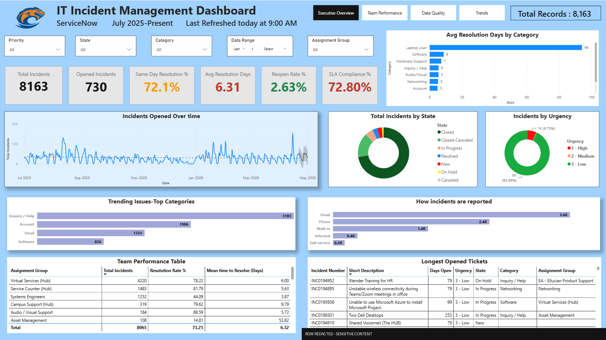
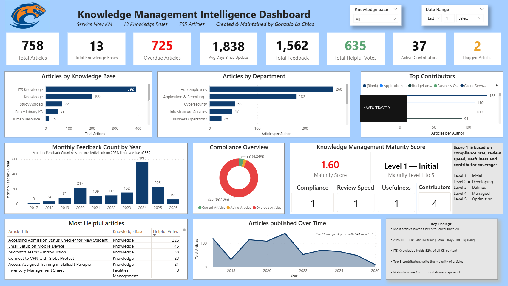

Aug 2025 — Present
M.S. Data Science in Data Intelligence
Clayton State University
I build data infrastructure, BI dashboards, and analytics tooling — these days as a Research Assistant at Clayton State University, alongside an M.S. in Data Science. Based in Atlanta, GA.
This site is actively getting a refresh — a few sections may shift over the next few weeks as I update them.

I'm a data analyst working my way into data engineering. Right now I'm a Research Assistant at Clayton State University, building an agentic AI system that verifies extreme rainfall detection over Atlanta by cross-checking NASA ERA5 reanalysis data against NOAA ground-truth storm reports — part of my M.S. special project. It's early-stage but active: so far I've built the data ingestion pipeline (ERA5 plus climatology baselines, with config-driven regional scoping) and I'm designing an LLM-orchestrated verification agent in LangGraph that flags events using a causal drift score.
That builds on the BI and pipeline work I did previously as a HUB Analyst in the university's IT department (ETL pipelines from ServiceNow, Active Directory, and PDQ into Power BI — see the dashboards below), and on the M.S. in Data Science I'm about a year into, focused on relational design, Python, and cloud analytics. At the moment I'm heads-down studying for the Microsoft PL-300 (Power BI) exam, with DP-700 (Fabric Data Engineer) up next. Longer term, I'm aiming for an Analytics Engineer or Junior Data Engineer role, adding SQL depth, PySpark, and dbt to my Power BI foundation.
Outside of work I follow sports analytics, drink more coffee than I should, and like building things that actually ship.
Executive BI — Clayton State IT leadership
The flagship incident-management dashboard used daily by HUB leadership to monitor service performance. End-to-end build — from the data pipeline through the DAX model to the final Power BI report.
Fully operational intelligence tool with features like KPIs leadership: MTTR, SLA compliance %, open backlog, reopen rate, and a forecasted ticket-volume trendline so the team can see where the queue is headed, not just where it's been.



Part of a multi-domain BI suite (incidents · anomaly reports · knowledge management). Names and select rows are redacted above for privacy — happy to walk through the live reports in an interview.
M.S. special project — Research Assistant, Clayton State University
An agentic AI system that verifies extreme rainfall detection over Atlanta by cross-checking NASA ERA5 reanalysis data against NOAA ground-truth storm reports.
Early-stage and actively in development. So far: a data ingestion pipeline pulling ERA5 and climatology baselines with config-driven regional scoping, plus the initial design of an LLM-orchestrated verification agent (LangGraph) that flags events using a causal drift score.
Uptime pipeline with Gmail + Teams alerts
Python monitor that logs service response times to CSV, integrates with Power BI for historical visualization, and fires alerts to Gmail SMTP and Microsoft Teams webhooks when health degrades.
Relational schema design & implementation
8-table normalized MySQL schema for a receipt-tracking application, including referential integrity, M:N resolution via associative entities, CHECK constraints, and automated constraint-validation scripts.
Clayton State University
Clayton State University
Open to Analytics Engineer, BI Developer, and Junior Data Engineer roles in the Atlanta area.